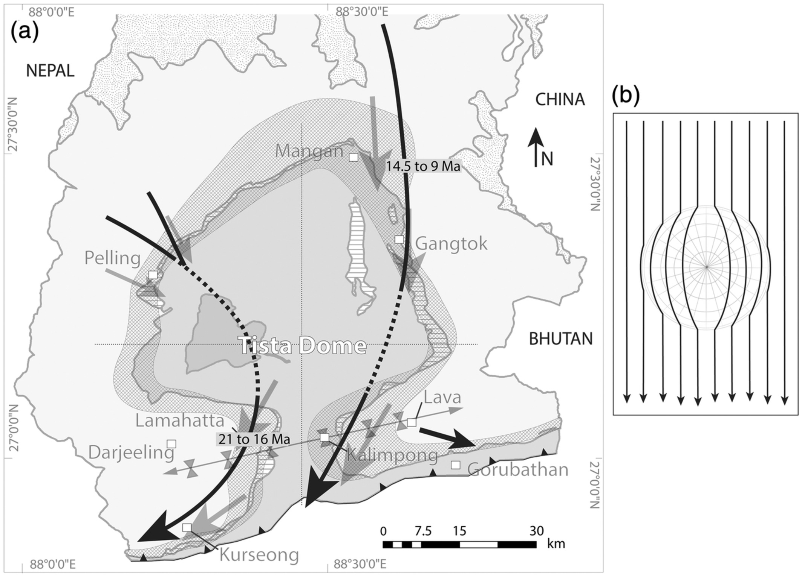

Large-Scale Rotational Motion Within the Main Central Thrust Zone in the Darjeeling-Sikkim Himalaya, India

Resumo em Português
Grande parte do encurtamento associado à colisão Índia-Eurásia foi acomodada por zonas de cisalhamento que abrangem o orógeno dentro do cinturão de dobras e cavalgamentos que forma o Orógeno Himaláico. A cinemática dessas zonas de cisalhamento e como elas acomodaram grandes deslocamentos permanecem pouco compreendidas. Em geral, o fluxo de rocha tem sido descrito como perpendicular ao orógeno em direção ao sul. Neste trabalho, o mapeamento estrutural e a análise microestrutural são aplicados para demonstrar que a seção Darjeeling-Sikkim da Zona de Empurrão Central (MCTZ) registra uma rotação anti-horária das tensões resolvidas dentro da cunha orogênica, mudando de sul para norte ao longo do período entre 20 e pelo menos 9 Ma.A direção de transporte durante o cavalgamento varia sistematicamente, definindo amplos arcos na escala de 50 a 100 km, rotacionando até 140° de vergência para SE ou S no norte, para vergência SW no sul. Essa rotação é independente do domo de ~60 km de largura no footwall da MCTZ, exposto como uma ampla meia-janela. A rotação pode ter sido uma resposta a heterogeneidades reológicas dentro do orógeno, formando impedimentos ao fluxo em grande escala. Esses resultados contribuem para a compreensão dos mecanismos de acomodação de deslocamentos em zonas de cisalhamento de escala orogênica e dos controles reológicos sobre o fluxo de rochas em cunhas orogênicas ativas.